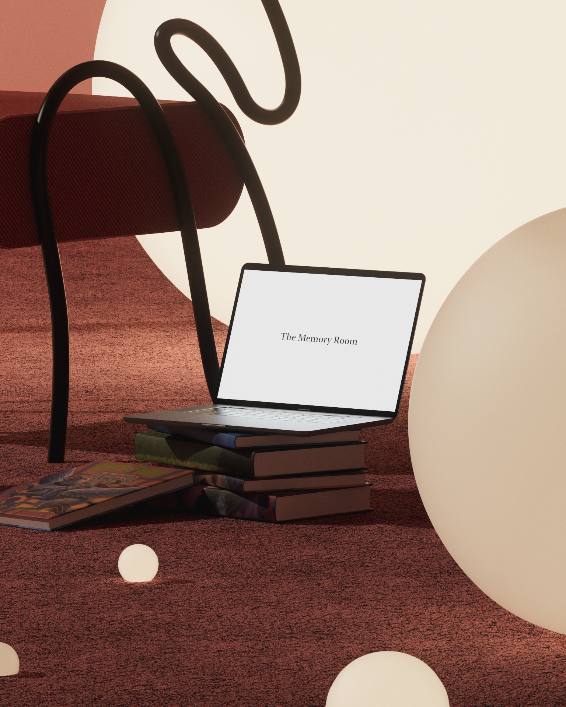
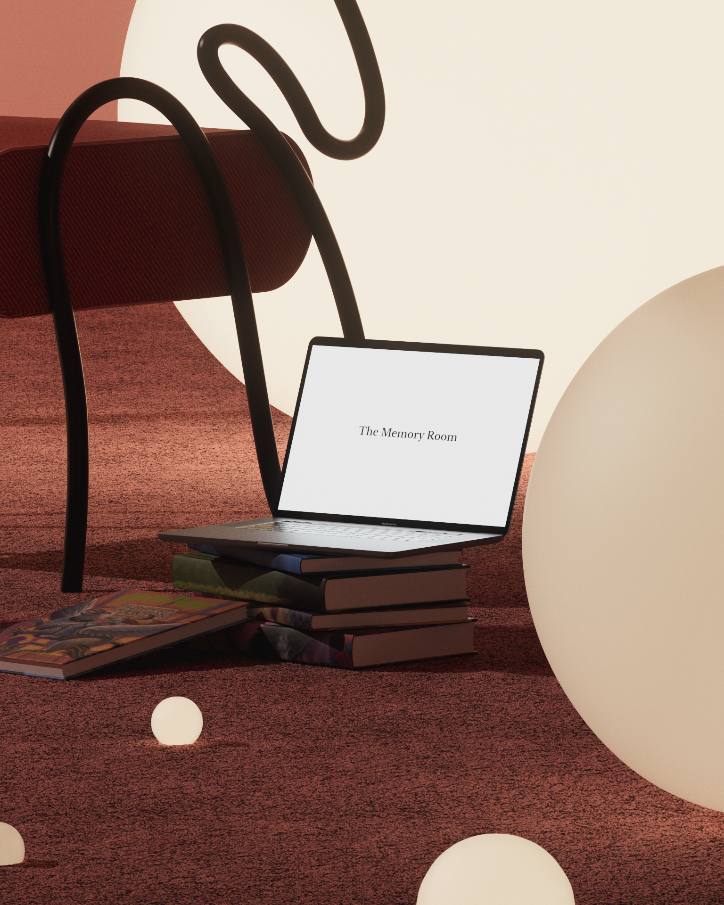

The Memory Room
“The Memory Room”, a space dedicated to our memories, good ones or bad ones, some are bigger, some are brighter. Some of them have a well defined shapes and colors, while others we need to dive into it to remember and avoid forgetting about it.
The concept to develop the identity relates the culture mediums cultivated inside science labs to study micro-organisms with the experiments IMI conducts inside organizations to develop culture for and with people. We developed a code in Nodebox3 to create digital culture mediums and use that as part of the identity. The colors are inspired by the nature - leafs, bambu and the fungi world - and also by the imperfect colors of the oriental ceramic.
Client: Various
Year: 2021
 
